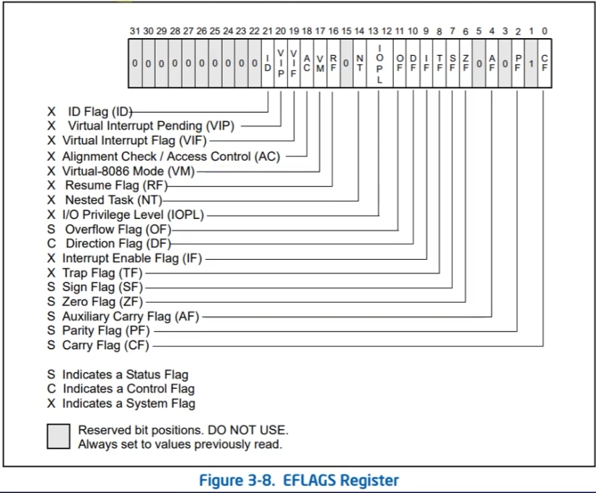

x86-64汇编学习笔记
机器指令和机器语言
机器指令，二进制数字，机器语言全局机器指令的集合，CPU通过执行一系列的机器指令完成计算工作。
汇编语言就是为了代替机器指令，使人类能够更加简单地编写程序而诞生的。汇编语言就是机器码的助记符。
编译器将汇编代码再编译为真正的机器码。
内存与硬盘
内存指内存条，即RAM，临时存储，读写快容量小。
硬盘长期存储，读写慢但容量大。
ROM并非硬盘，ROM只读存储器（Read Only Memory），其内容在写入后就不能更改。
存储单元
物理内存被划分为很多个存储单元，一个存储单元能存储8bit内容，也就是1字节。
内存的最小单元是字节，不是位。
-
1B = 8bit
-
1KB = 1024B
-
1MB = 1024KB
……
每一个存储单元都有相应的编号，也就是内存地址。运行程序时，操作系统会把程序载入内存中，随后CPU读取和写入程序中的某些数据并执行代码。
无论是读取还是写入、执行，这些都是需要通过CPU总线进行的。
总线分为数据线、地址总线、控制总线
简而言之，地址总线负责寻址，控制总线负责发出控制指令，如读写，数据总线负责各个组件之间的数据传输。
CPU的寻址能力
CPU的寻址能力是由地址总线的位数决定的。
通常认为32位系统有32位的寻址能力，64位同理，但不绝对。
虚拟内存
物理内存即真实存在的内存，虚拟内存是建立在页表的基础上，由操作系统实现的。
寄存器
基本的程序执行寄存器分为以下四类
- 通用目的寄存器
- 段寄存器
- 标志寄存器
- 指令指针寄存器
16位通用寄存器中的高位和低位
16位通用寄存器中，ax,bx,cx,dx可以只使用其高8位或低8位。
高8位用字符h表示，低8位用字母l表示。
32位通用目的寄存器
将16位通用寄存器扩展到32位，就得到了以下寄存器。
- EAX
- EBX
- EDX
- ESI
- EDI
- ESP
- EBP
64位通用目的寄存器
将32扩展到64位，就得到了以下寄存器
- RAX
- RBX
- RCX
- RDX
- RSI
- RDI
- RSP
- RDP
R是通用前缀，取自单词Register。
此外还有R8-R15。
同名寄存器之间的关系
同名寄存器之间并不是许多个相互独立的寄存器，而是共同属于一个寄存器。
以RAX为例：
RAX是整个64位寄存器，EAX指的是RAX的低32位，AX指的是RAX的0-15位。AH指的是RAX的8-15位，AL指的是RAX的0-7位。
1 word = 2 byte
1 double word = 4 byte
段寄存器
段寄存器CS、DS、SS、ES、FS、GS都保存着16位段选择子。用于标识内存中特定的段。
CS指向代码段，SS指向栈段，DS、ES、FS、GS指向数据段。
内存可以被分为不同的段，访问内存时通过段基址+偏移的方式来访问。
注意：物理内存本身是连续的，并没有被分隔开，分段是CPU的寻址方式。
到了64位，段的概念被进一步弱化。
内存变成平坦模型，即无分段式内存。所有对内存的访问都在同一个地址空间内进行。
此外，对于段的保护也被弱化，64位更强调对页的保护。
看来段寄存器没什么用了啊
段寄存器最初的存在目的是辅助寻址，在32位下基本不再用于寻址，而是用于保护，而64位中其保护作用进一步被削弱。
标志寄存器
标准寄存器存储了机组标志，分别是状态标志、控制标志、系统标志。

简单地来说，系统中的某些状态与指令的执行结果会存在这个寄存器当中。
标志寄存器在32位和64位中分别叫EFLAGS和RFLAGS
RFLAGS的高32位是保留为，低32位与EFLAGS相同。
指令指针寄存器
简而言之，他存储的是CPU即将执行的下一条指令的地址，通常用ip/eip/rip替代 （16，32，64位）
进制
简单来说，n进制就是逢n进一。计算机当中，除了10进制，还有2进制和6进制。
小端序和大端序
小端序是指低字节在低地址，高字节在高地址。
优点：字节高低位与地址高低位序列相同。
缺点：不符合人类阅读顺序。
如：64 00 00 00
大端序与之相反。
如 00 00 00 64
MOV指令
MOV取自英文单词move，移动。
例：
MOV RAX, RCX
意思是，把RCX寄存器的值赋值给RAX